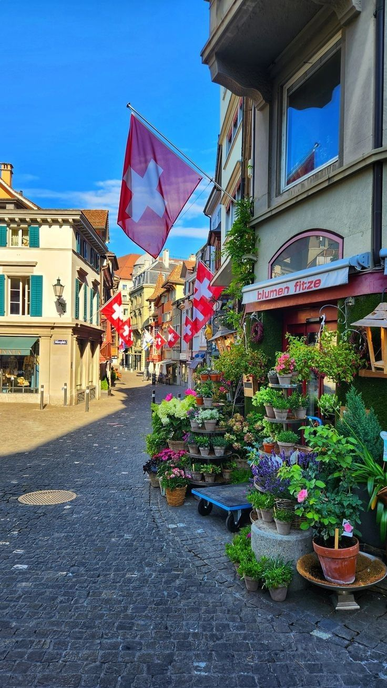

Hey,prazer!
Meu nome é Leticia, tenho 19 anos moro em Colombo e sou estudante da área de TI, atualmente estou terminando minha primeira graduação em gestão de TI
e no primeiro semestre da graduação em Banco de dados.
Sou apaixonada por dados e escolhi seguir na área de análise de dados, nunca imaginei que pudesse gostar tanto de uma área como essa, mas cá estou!
Nos últimos tempos, tenho me dedicado muito aos estudos de análise, tanto a base teórica quanto ferramentas como Power Bi, meu objetivo atual é começar a desenvolver
um portfólio com análises que realmente sejam úteis ou usadas no dia a dia sabe?
Saindo um pouquinho da área profissional e estudantil, sou apaixonada por livros, em especial um genêro que chamamos de romantasia, fantasia com a medida certa de romance,
mas leio um pouco de tudo, gosto muito de distopias tambem, no geral gosto de toda leitura que me faça escapar um pouco da rotina.
Também escrevo, pinto e adoro estudar qualquer assunto aleatório pelo mesmo motivo.
Aqui vai o que eu mais gosto de fazer no horário livre:
| País | Foto |
|---|---|
| Grécia | |
| Suíça |  |
| Tailândia | |